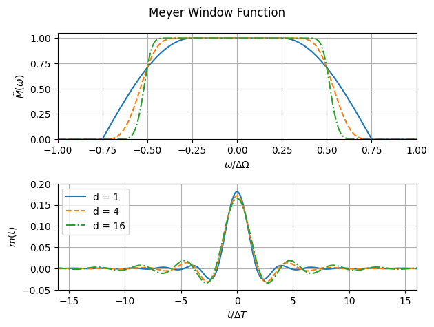

Visualising the WDM wavelets
[1]:
import numpy as np
import matplotlib.pyplot as plt
from matplotlib import gridspec
import matplotlib.patches as patches
import WDM
Here is a plot of the normalised incomplete beta function \(\nu_d(x)\) for several example values of \(d\).
[2]:
fig, ax = plt.subplots()
fig.suptitle("Regularised Incomplete Beta Function")
d_values = [1, 4, 16]
x = np.linspace(0, 1, 1000)
for d in d_values:
ax.plot(x, WDM.code.utils.Meyer.nu_d(x, d), label=f"{d = }")
ax.set_xlabel(r"$x$")
ax.set_ylabel(r"$\nu_d(x)$")
ax.set_xlim(0, 1)
ax.set_ylim(0, 1)
ax.legend(loc='upper left')
plt.grid()
plt.show()
Here is a plot of the Meyer window function in both time and frequency-domains. Note that the wavelet is well localised (compact support) in frequency but less so in time.
[3]:
T = 500.
times = np.linspace(-T, T, 10000)
dt = np.mean(np.diff(times))
A, B = 0.25, 0.5
dOmega = 2 * A + B
dF = dOmega / (2*np.pi)
dT = 1 / (2*dF)
freqs = np.fft.fftfreq(len(times), d=dt)
ls = ['-', '--', '-.']
col = ['C0', 'C1', 'C2']
fig, axes = plt.subplots(nrows=2)
fig.suptitle("Meyer Window Function")
d_values = [1, 4, 16]
for i, d in enumerate(d_values):
Phi = WDM.code.utils.Meyer.Meyer(2*np.pi*freqs, d=d, A=A, B=B)
Phi_centered = Phi * np.exp(-2j*np.pi*freqs*T)
phi = np.fft.ifft(Phi_centered).real / dt
omega = 2 * np.pi * np.fft.fftshift(freqs)
axes[0].plot(omega/dOmega, np.fft.fftshift(Phi), ls=ls[i], c=col[i])
axes[1].plot(times/dT, phi, label=f"{d = }", ls=ls[i], c=col[i])
axes[0].set_xlabel(r"$\omega/\Delta\Omega$")
axes[0].set_ylabel(r"$\tilde{M}(\omega)$")
axes[0].set_xlim(-1., 1.)
axes[0].set_ylim(0., 1.05)
axes[1].set_xlabel(r"$t/\Delta T$")
axes[1].set_ylabel(r"$m(t)$")
axes[1].set_xlim(-16, 16)
axes[1].set_ylim(-0.05, 0.2)
axes[0].grid()
axes[1].grid()
axes[1].legend(loc='upper left')
plt.tight_layout()
plt.show()

The wavelet basis is defined in in the frequency domain in terms of the Meyer wavelet, \(\tilde{G}_{nm}(\omega)\).
[4]:
wdm = WDM.code.discrete_wavelet_transform.WDM.WDM_transform(dt=1.0, Nf=16, N=512)
fig, ax = plt.subplots()
fig.suptitle("WDM Wavelet basis")
mask = (wdm.freqs>=0.)
for m in range(17):
if m==16:
ax.plot(wdm.freqs[mask]/wdm.f_Ny, np.abs(wdm.Gnm(n=wdm.Nt-1, m=0)[mask]))
else:
ax.plot(wdm.freqs[mask]/wdm.f_Ny, np.abs(wdm.Gnm(n=0, m=m)[mask]))
ax.set_xlabel(r"Frequency $f/f_{\rm Ny}$")
ax.set_ylabel(r"Amplitude $|\tilde{G}_{nm}(f)|$")
ax.set_xlim(0, 1)
ax.set_ylim(0, 6)
plt.grid()
plt.show()

The wavelet basis in the time domain, \(g_{nm}(t)\).
[5]:
fig, ax = plt.subplots()
fig.suptitle("WDM Wavelet basis")
ls = ['-', '--', '-.']
col = ['C0', 'C1', 'C2']
for i, (n, m) in enumerate(zip([8, 16, 24], [1, 2, 3])):
ax.plot(wdm.times, wdm.gnm(n=n, m=m),
label=f"(n,m)=({n},{m})", c=col[i], ls=ls[i])
ax.set_xlabel(r"Time $t$")
ax.set_ylabel(r"Wavelet $g_{nm}(t)$")
ax.set_xlim(0, 512)
ax.set_xticks([i*64 for i in range(9)])
ax.set_ylim(-0.3, 0.4)
ax.legend(loc='upper left', ncol=3)
plt.grid()
plt.show()

Here is nice visualisation of the wavelet basis in both time and frequency domains.
[6]:
n_vals = [8, 16, 24]
m_vals = [1, 4, 7]
ls = ['-', '--', '-.']
col = ['C0', 'C1', 'C2', 'k']
fig = plt.figure(figsize=(6, 6))
gs = gridspec.GridSpec(2, 3, width_ratios=[3, 0.1, 1], height_ratios=[1, 3])
# Time-domain wavelet (top-left)
ax_time = fig.add_subplot(gs[0, 0])
for i, (n, m) in enumerate(zip(n_vals, m_vals)):
ax_time.plot(wdm.times, wdm.gnm(n, m), c=col[i], ls=ls[i])
ax_time.set_xlim(0, wdm.T)
ax_time.set_xticks([])
ax_time.set_yticks([])
ax_time.set_ylabel(r"$g_{nm}(t)$")
# Frequency-domain wavelet (bottom-right)
ax_freq = fig.add_subplot(gs[1, 2])
mask = (wdm.freqs>=0.)
for i, (n, m) in enumerate(zip(n_vals, m_vals)):
ax_freq.plot(np.abs(wdm.Gnm(n,m))[mask], wdm.freqs[mask],
c=col[i], ls=ls[i])
ax_freq.set_ylim(0, wdm.f_Ny)
ax_freq.set_xticks([])
ax_freq.set_yticks([])
ax_freq.yaxis.tick_right()
ax_freq.yaxis.set_label_position("right")
ax_freq.xaxis.set_label_position('top')
ax_freq.set_xlabel(r"$|\tilde{G}_{nm}(f)|$")
# Time-frequency grid (bottom-left)
ax_tf = fig.add_subplot(gs[1, 0])
t_ticks = [(i+0.5)*wdm.dT for i in range(wdm.Nt)]
f_ticks = [(i+0.5)*wdm.dF for i in range(wdm.Nf)]
for t in t_ticks:
ax_tf.axvline(t, color='k', lw=0.5)
for f in f_ticks:
ax_tf.axhline(f, color='k', lw=0.5)
ax_tf.set_xlim(0, wdm.T)
ax_tf.set_ylim(0, wdm.f_Ny)
ax_tf.set_xticks(np.linspace(0, wdm.T, 5))
ax_tf.set_yticks(np.linspace(0, wdm.f_Ny, 5))
ax_tf.set_xlabel(r"Time $t$ [seconds]")
ax_tf.set_ylabel(r"Frequency $f$ [Hertz]")
def draw_rectangle(n, m, i, ax_tf, text_label=False):
eps_x, eps_y = 0., 0.
assert 0 <= n < wdm.Nt, f"n={n} is out of bounds for Nt={wdm.Nt}"
assert 0 <= m < wdm.Nf, f"m={m} is out of bounds for Nf={wdm.Nf}"
if m>0:
if n==0:
t0, t1 = 0, t_ticks[0]
f0, f1 = f_ticks[m-1], f_ticks[m]
rect = patches.Rectangle((t0, f0), t1-t0, f1-f0, linewidth=1,
edgecolor=col[i], facecolor=col[i], alpha=0.9)
ax_tf.add_patch(rect)
if text_label:
ax_tf.text(t1+eps_x, f0+eps_y, r"$(n,m)=("+str(n)+","+str(m)+")$",
fontsize=10, color=col[i], rotation=90)
t0, t1 = t_ticks[-1], wdm.T
rect = patches.Rectangle((t0, f0), t1-t0, f1-f0, linewidth=1,
edgecolor=col[i], facecolor=col[i], alpha=0.9)
ax_tf.add_patch(rect)
else:
t0, t1 = t_ticks[n-1], t_ticks[n]
f0, f1 = f_ticks[m-1], f_ticks[m]
rect = patches.Rectangle((t0, f0), t1-t0, f1-f0, linewidth=1,
edgecolor=col[i], facecolor=col[i], alpha=0.9)
ax_tf.add_patch(rect)
if text_label:
ax_tf.text(t1+eps_x, f0+eps_y, r"$(n,m)=("+str(n)+","+str(m)+")$",
fontsize=10, color=col[i], rotation=90)
else:
if n==0:
t0, t1 = 0, t_ticks[1]
f0, f1 = 0., f_ticks[0]
rect = patches.Rectangle((t0, f0), t1-t0, f1-f0, linewidth=1,
edgecolor=col[i], facecolor=col[i], alpha=0.9)
ax_tf.add_patch(rect)
t0, t1 = t_ticks[-1], wdm.T
rect = patches.Rectangle((t0, f0), t1-t0, f1-f0, linewidth=1,
edgecolor=col[i], facecolor=col[i], alpha=0.9)
ax_tf.add_patch(rect)
elif n<wdm.Nt//2:
t0, t1 = t_ticks[2*n-1], t_ticks[2*n+1]
f0, f1 = 0., f_ticks[0]
rect = patches.Rectangle((t0, f0), t1-t0, f1-f0, linewidth=1,
edgecolor=col[i], facecolor=col[i], alpha=0.9)
ax_tf.add_patch(rect)
elif n==wdm.Nt//2:
t0, t1 = 0, t_ticks[1]
f0, f1 = f_ticks[-1], wdm.f_Ny
rect = patches.Rectangle((t0, f0), t1-t0, f1-f0, linewidth=1,
edgecolor=col[i], facecolor=col[i], alpha=0.9)
ax_tf.add_patch(rect)
t0, t1 = t_ticks[-1], wdm.T
rect = patches.Rectangle((t0, f0), t1-t0, f1-f0, linewidth=1,
edgecolor=col[i], facecolor=col[i], alpha=0.9)
ax_tf.add_patch(rect)
else:
t0, t1 = t_ticks[2*(n-wdm.Nt//2)-1], t_ticks[2*(n-wdm.Nt//2)+1]
f0, f1 = f_ticks[-1], wdm.f_Ny
rect = patches.Rectangle((t0, f0), t1-t0, f1-f0, linewidth=1,
edgecolor=col[i], facecolor=col[i], alpha=0.9)
ax_tf.add_patch(rect)
for i, (n, m) in enumerate(zip(n_vals, m_vals)):
draw_rectangle(n, m, i, ax_tf, text_label=True)
# Remove middle unused column
fig.delaxes(fig.add_subplot(gs[0, 1]))
# Tighter layout
plt.subplots_adjust(wspace=0.05, hspace=0.05, left=0.08, right=0.92, top=0.95, bottom=0.08)
plt.show()

[7]:
n = 20
m = 4
fig = plt.figure(figsize=(6, 6))
gs = gridspec.GridSpec(2, 3, width_ratios=[3, 0.1, 1], height_ratios=[1, 3])
# Time-domain wavelet (top-left)
ax_time = fig.add_subplot(gs[0, 0])
ax_time.plot(wdm.times, wdm.gnm(n, m), 'k-')
ax_time.set_xlim(0, wdm.T)
ax_time.set_xticks([])
ax_time.set_yticks([])
ax_time.set_ylabel(r"$g_{nm}(t)$")
# Frequency-domain wavelet (bottom-right)
mask = wdm.freqs >= 0.
ax_freq = fig.add_subplot(gs[1, 2])
ax_freq.plot(np.abs(wdm.Gnm(n,m))[mask],
wdm.freqs[mask], 'k-')
ax_freq.set_ylim(0, wdm.f_Ny)
ax_freq.set_xticks([])
ax_freq.set_yticks([])
ax_freq.yaxis.tick_right()
ax_freq.yaxis.set_label_position("right")
ax_freq.xaxis.set_label_position('top')
ax_freq.set_xlabel(r"$|\tilde{G}_{nm}(f)|$")
# Time-frequency grid (bottom-left)
ax_tf = fig.add_subplot(gs[1, 0])
t_ticks = [(i+0.5)*wdm.dT for i in range(wdm.Nt)]
f_ticks = [(i+0.5)*wdm.dF for i in range(wdm.Nf)]
for t in t_ticks:
ax_tf.axvline(t, color='k', lw=0.5)
for f in f_ticks:
ax_tf.axhline(f, color='k', lw=0.5)
ax_tf.set_xlim(0, wdm.T)
ax_tf.set_ylim(0, wdm.f_Ny)
ax_tf.set_xticks(np.linspace(0, wdm.T, 5))
ax_tf.set_yticks(np.linspace(0, wdm.f_Ny, 5))
ax_tf.set_xlabel(r"Time $t$ [seconds]")
ax_tf.set_ylabel(r"Frequency $f$ [Hertz]")
draw_rectangle(n, m, 3, ax_tf)
# Remove middle unused column
fig.delaxes(fig.add_subplot(gs[0, 1]))
# Tighter layout
plt.subplots_adjust(wspace=0.05, hspace=0.05, left=0.08, right=0.92, top=0.95, bottom=0.08)
plt.show()

This commented code block produces the animated .gif that can be seen in the docs section “Mathematical Background”.
[8]:
"""
from PIL import Image
import io
def frame(n, m):
fig = plt.figure(figsize=(6, 6))
gs = gridspec.GridSpec(2, 3, width_ratios=[3, 0.1, 1], height_ratios=[1, 3])
# Time-domain wavelet (top-left)
ax_time = fig.add_subplot(gs[0, 0])
ax_time.plot(wdm.times, wdm.gnm(n, m), 'k-')
ax_time.set_xlim(0, wdm.T)
ax_time.set_xticks([])
ax_time.set_yticks([])
ax_time.set_ylabel(r"$g_{nm}(t)$")
# Frequency-domain wavelet (bottom-right)
mask = wdm.freqs >= 0.
ax_freq = fig.add_subplot(gs[1, 2])
ax_freq.plot(np.abs(wdm.Gnm(n, m))[mask],
wdm.freqs[mask], 'k-')
ax_freq.set_ylim(0, wdm.f_Ny)
ax_freq.set_xticks([])
ax_freq.set_yticks([])
ax_freq.yaxis.tick_right()
ax_freq.yaxis.set_label_position("right")
ax_freq.xaxis.set_label_position('top')
ax_freq.set_xlabel(r"$|\tilde{G}_{nm}(f)|$")
# Time-frequency grid (bottom-left)
ax_tf = fig.add_subplot(gs[1, 0])
t_ticks = [(i+0.5)*wdm.dT for i in range(wdm.Nt)]
f_ticks = [(i+0.5)*wdm.dF for i in range(wdm.Nf)]
for t in t_ticks:
ax_tf.axvline(t, color='k', lw=0.5)
for f in f_ticks:
ax_tf.axhline(f, color='k', lw=0.5)
ax_tf.set_xlim(0, wdm.T)
ax_tf.set_ylim(0, wdm.f_Ny)
ax_tf.set_xticks(np.linspace(0, wdm.T, 5))
ax_tf.set_yticks(np.linspace(0, wdm.f_Ny, 5))
ax_tf.set_xlabel(r"Time $t$ [seconds]")
ax_tf.set_ylabel(r"Frequency $f$ [Hertz]")
draw_rectangle(n, m, 3, ax_tf)
# Remove middle unused column
fig.delaxes(fig.add_subplot(gs[0, 1]))
ax_label = fig.add_subplot(gs[0, 2])
ax_label.axis("off") # Turn off axes
# Add your text — adjust ha/va for alignment, and fontsize as desired
ax_label.text(1.0, 1.0, f"n={n}, m={m}",
ha='right', va='top', transform=ax_label.transAxes,
fontsize=12, fontweight='bold')
# Tighter layout
plt.subplots_adjust(wspace=0.05, hspace=0.05, left=0.08, right=0.92, top=0.95, bottom=0.08)
buf = io.BytesIO()
fig.savefig(buf, format='png')
plt.close(fig) # Close to avoid memory issues
buf.seek(0)
frame = Image.open(buf).convert('RGB')
return frame
# List to store frames
frames = []
for n in range(wdm.Nt):
for m in range(wdm.Nf):
frames.append(frame(n, m))
# Save as animated GIF
frames[0].save(
'wavelet_animation.gif',
save_all=True,
append_images=frames[1:],
duration=200, # duration per frame in ms
loop=0 # 0 = loop forever
)
"""
[8]:
'\nfrom PIL import Image\nimport io\n\ndef frame(n, m):\n\n fig = plt.figure(figsize=(6, 6))\n gs = gridspec.GridSpec(2, 3, width_ratios=[3, 0.1, 1], height_ratios=[1, 3])\n\n # Time-domain wavelet (top-left)\n ax_time = fig.add_subplot(gs[0, 0])\n ax_time.plot(wdm.times, wdm.gnm(n, m), \'k-\')\n ax_time.set_xlim(0, wdm.T)\n ax_time.set_xticks([])\n ax_time.set_yticks([])\n ax_time.set_ylabel(r"$g_{nm}(t)$")\n\n # Frequency-domain wavelet (bottom-right)\n mask = wdm.freqs >= 0.\n ax_freq = fig.add_subplot(gs[1, 2])\n ax_freq.plot(np.abs(wdm.Gnm(n, m))[mask], \n wdm.freqs[mask], \'k-\')\n ax_freq.set_ylim(0, wdm.f_Ny)\n ax_freq.set_xticks([])\n ax_freq.set_yticks([])\n ax_freq.yaxis.tick_right()\n ax_freq.yaxis.set_label_position("right")\n ax_freq.xaxis.set_label_position(\'top\')\n ax_freq.set_xlabel(r"$|\tilde{G}_{nm}(f)|$")\n\n # Time-frequency grid (bottom-left)\n ax_tf = fig.add_subplot(gs[1, 0])\n t_ticks = [(i+0.5)*wdm.dT for i in range(wdm.Nt)]\n f_ticks = [(i+0.5)*wdm.dF for i in range(wdm.Nf)]\n for t in t_ticks:\n ax_tf.axvline(t, color=\'k\', lw=0.5)\n for f in f_ticks:\n ax_tf.axhline(f, color=\'k\', lw=0.5)\n ax_tf.set_xlim(0, wdm.T)\n ax_tf.set_ylim(0, wdm.f_Ny)\n ax_tf.set_xticks(np.linspace(0, wdm.T, 5))\n ax_tf.set_yticks(np.linspace(0, wdm.f_Ny, 5))\n ax_tf.set_xlabel(r"Time $t$ [seconds]")\n ax_tf.set_ylabel(r"Frequency $f$ [Hertz]")\n\n draw_rectangle(n, m, 3, ax_tf)\n\n # Remove middle unused column\n fig.delaxes(fig.add_subplot(gs[0, 1]))\n\n ax_label = fig.add_subplot(gs[0, 2])\n ax_label.axis("off") # Turn off axes\n\n # Add your text — adjust ha/va for alignment, and fontsize as desired\n ax_label.text(1.0, 1.0, f"n={n}, m={m}", \n ha=\'right\', va=\'top\', transform=ax_label.transAxes,\n fontsize=12, fontweight=\'bold\')\n\n # Tighter layout\n plt.subplots_adjust(wspace=0.05, hspace=0.05, left=0.08, right=0.92, top=0.95, bottom=0.08)\n\n buf = io.BytesIO()\n fig.savefig(buf, format=\'png\')\n plt.close(fig) # Close to avoid memory issues\n buf.seek(0)\n\n frame = Image.open(buf).convert(\'RGB\')\n\n return frame\n\n# List to store frames\nframes = []\nfor n in range(wdm.Nt):\n for m in range(wdm.Nf):\n frames.append(frame(n, m))\n\n# Save as animated GIF\nframes[0].save(\n \'wavelet_animation.gif\',\n save_all=True,\n append_images=frames[1:],\n duration=200, # duration per frame in ms\n loop=0 # 0 = loop forever\n)\n'
[ ]: